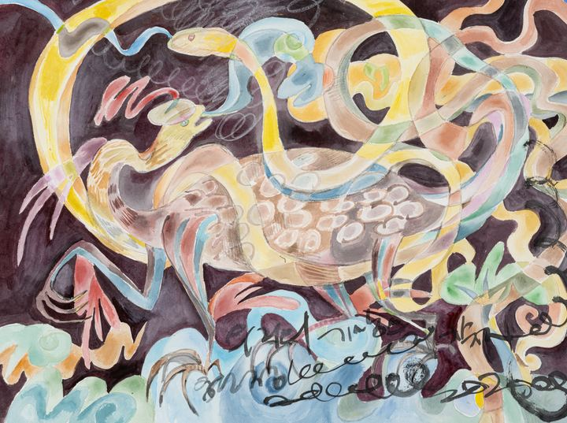

Guardian of Harmony: Hyunmu Reborn조화의 수호신: 다시 태어난 현무

In a deep plum darkness, a turtle sets down its four feet and takes a step. A yellow snake winds up over its spotted shell to meet the turtle face to face, and around them ribbons of many colors intertwine and flow on. Hyunmu, the guardian of the North in which turtle and snake become one, is painted here not as a fixed form but as an ever-circulating current. An old saying tells us that all things carry yin on their backs and embrace yang in their arms, finding harmony through the energy between them. The weight of the turtle and the suppleness of the snake do not push each other away; they become one body. To hold what is different and still keep one's center: that is a living balance.
짙은 자줏빛 어둠 속에서 거북 한 마리가 네 발을 딛고 걸음을 옮긴다. 둥근 무늬의 등 위로 노란 뱀이 몸을 감아 올라 거북과 얼굴을 마주하고, 그 둘레로 여러 빛깔의 띠들이 얽히고 이어지며 흐른다. 거북과 뱀이 하나 된 북방의 수호신 현무를, 고정된 형상이 아니라 끊임없이 순환하는 흐름으로 다시 그렸다. 만물은 음을 등에 지고 양을 품에 안으며, 그 사이의 기운으로 조화를 이룬다는 옛말이 있다. 거북의 묵직함과 뱀의 유연함이 서로를 밀어내지 않고 한 몸이 된다. 서로 다른 것을 품고도 중심을 잃지 않는 것, 그것이 살아 있는 균형이다.